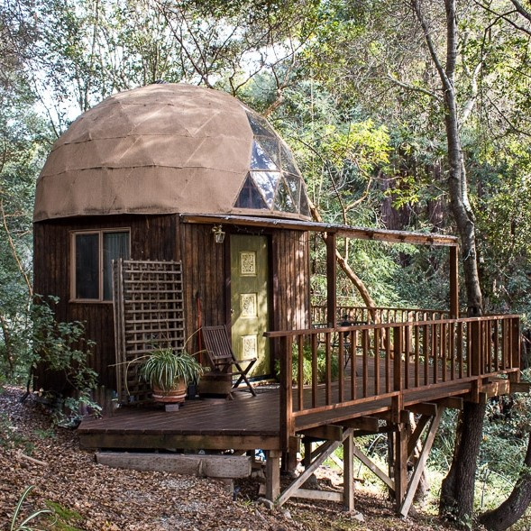

No se encuentra en ninguna gran metropoli como París, Londres o Los Angeles: The Mushrrom Dome su ubicación es en Aptos, una pequeña ciudad de California, conformada por solo siete mil habitantes. Se trata de una pequeña cabaña que se asemeja a un hongo, y su intención es que las personas puedan liberarse de su estrés mientras estén ahí.
The Mushroom Dome satisface las demandas del turista moderno, ya que ofrece fácil accesibilidad, se encuentra apartado de las multitudes y está inmerso en la naturaleza, en las cercanías de una hermosa reserva natural. El costo por noche es de alrededor de 150 dólares, y desde 2009 ha recibido a más de dos mil huéspedes provenientes de cincuenta países alrededor del mundo.
Este peculiar alojamiento brinda a los visitantes una experiencia única y tranquila, donde pueden disfrutar de la serenidad y la belleza natural que los rodea. La cabaña en forma de hongo es un refugio acogedor y pintoresco que permite a las personas desconectarse y encontrar paz en medio de la naturaleza.